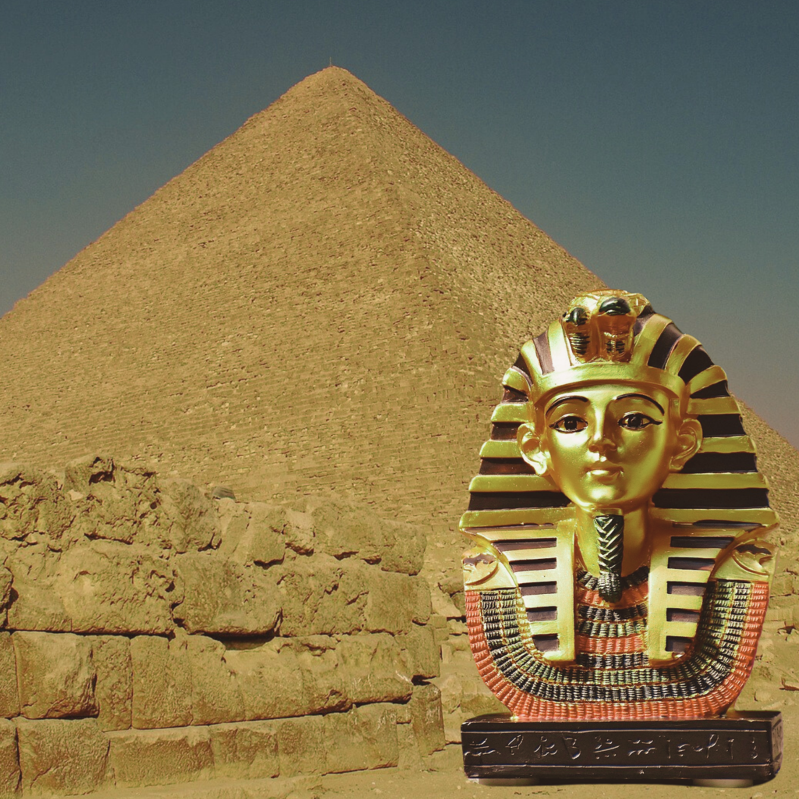
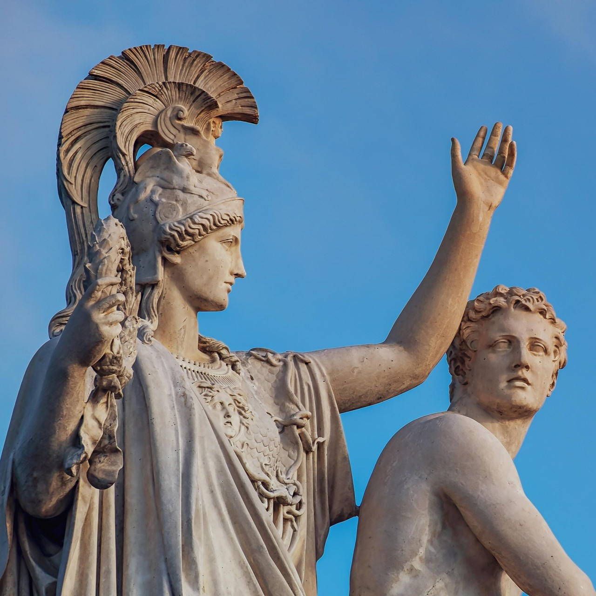
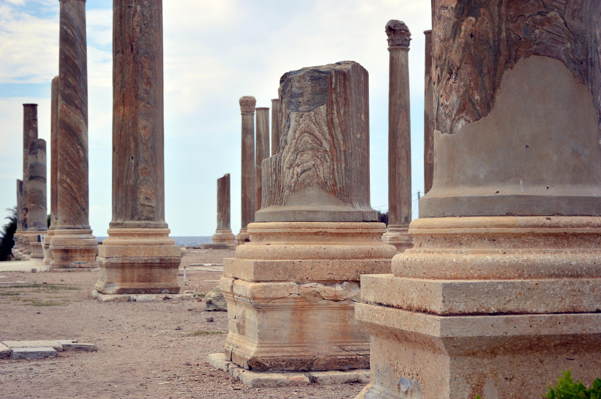

Grécia |
Roma |
Geral |
|
Sobre |
Referências |
|||||||||||||||||||||||||||||||||||||||||||||||||||

|
Nesta seção, exploramos esses povos que dominaram diferentes partes do mundo, revelando como viviam, o que acreditavam e como influenciaram o presente. Da grandiosidade das pirâmides egípcias à sabedoria dos escribas mesopotâmicos, das rotas comerciais fenícias à disciplina dos guerreiros chineses, cada civilização tem uma história fascinante para contar. |
|
|
|  |
EgitoEntre o deserto e o rio Nilo existiu uma das civilizações mais duradouras da história. |
MesopotâmiaLocalizado entre os rios Tigre e Eufrates, a "terra entre rios" ou Mesopotâmia foi o berço |
|
|  |
PérsiaO Império Persa se formou na região onde hoje está o Irã e se tornou uma das maiores potências da Antiguidade. |
FeníciosOs fenícios foram um povo de comerciantes e navegadores que habitava a região onde hoje está o Líbano. |
 |
China AntigaNa região do rio Amarelo, a China desenvolveu uma das civilizações mais antigas e contínuas da história. |